Are you making quality videos over and over again and yet not able to grow your YouTube channel as planned? That sure is frustrating! Well, you may have a knack to make great videos but your recipe is missing out on some magic ingredients.
YouTube being the second largest search engine after Google itself, with over 2 billion monthly logged in users, there sure is no scarcity of content consumers. Now, your job as creator is to find your target audience among these 2 billion users and attract them towards your channel.
In this blog, I am going to show you how exactly YouTubers can grow their YouTube channel in 2021
Contents
- 1. Zero-in on your niche
- 2. Quality content is the key
- 3. Post videos in a routine
- 4. Design a compelling channel trailer
- 5. Optimize channel page
- 6. Make best out of YouTube SEO
- 7. Leverage Google Video Ads
- 8. Drive traffic to your YouTube channel from blog
- 9. Empower yourself with the right tools / Equipment for demonstrating professionalism
- 10. Design custom-made thumbnails
- 11. Maximize audience retention
- 12. Interact with audience
- 13. Use subscribe button as your branded watermark
- 14. Write an enticing channel description in the “About” section
- 15. Create playlists
- 16. Collaborate with fellow YouTubers
- 17. Consider giveaways and contests
- 18. Cross platform promotions
1. Zero-in on your niche
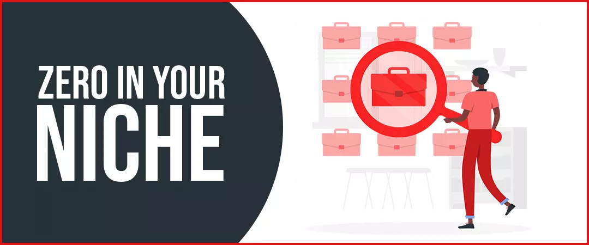
First, let’s talk about why the heading says “zero-in” on your niche. Let’s say your channel falls under the category of ‘Technology’. Keeping in mind that each category is in itself really vast, what you need to do is find the sub-sub-sub-sub category that your channel is going to be about!
Zero-in until you find the sub category that will help you play to your strengths! For example, if your channel is about technology, let’s say you’re good at giving reviews, going further decide if you are good at reviewing mobile phones or laptops or any other electronic gadget. Once you decide the correct niche for your channel, your next task is to make your channel a ‘one stop destination’ for that niche, so that when a viewer lands on your YouTube channel page they may not find the need to go to some other channel.
This will you grow your subscriber base, views and ultimately grow your Youtube channel from scratch.
2. Quality content is the key
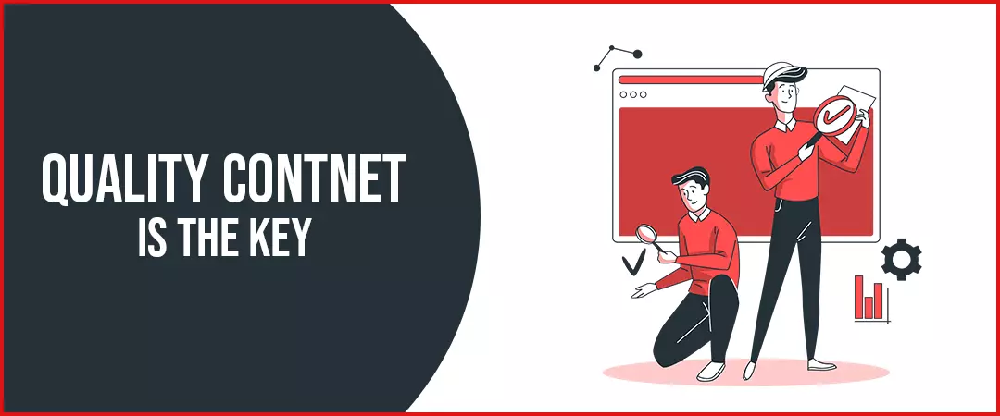
Over 500 hours of video content is uploaded to YouTube every single minute and if your content is not top- notch, your videos will just get buried in this ocean of content. Everything and anything you upload to your YouTube channel should be representational of your best efforts. Here a few things you can do to appraise the quality of your video:
Edit your videos to cut out any unnecessary pauses or portions of videos. Always plan your entire video before you film it. Make sure what you publish is a representation of your best efforts. If you don’t have your hand set in editing, hire a freelancer to do it for you but one way or another only your best work should see the light of the day.
Script your video beforehand and rehearse your hand actions, facial expressions, call to actions etc. to improve your camera presence. Use good quality equipment to shoot your videos such as a camera or fine quality, lighting sets and editing software. Using music in your background helps immensely in holding the viewer’s attention in a long video.
Make a combination of burst and evergreen videos. Burst videos are what will attract viewers towards your channel and evergreen videos are what will make them spend more watch hours on your channel. This mix and match will definitely increase your Youtube videos organic reach. Quality content is the key to reach first 1000 subscribers to get your channel monetized. You can also buy Youtube subscribers to reach first 1000 subscribers.
3. Post videos in a routine
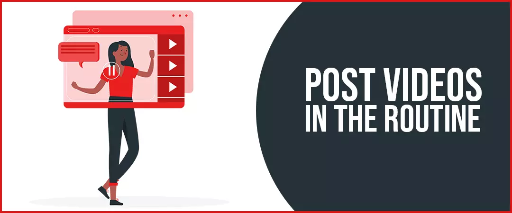
While making good quality videos is important but so is posting videos on your channel consistently. The best practice is to devise an upload schedule for YouTube channel that allows you to not only produce quality videos but also helps maintain a uniformity to your uploads. Make sure your schedule allows you to publish a combination of burst and evergreen videos on your channel. Burst videos are what will attract viewers towards your channel and evergreen videos are what will make them spend more watch hours on your channel.
It is also a great way to retain your subscribers and viewers and to get more audience. This will let your audience know when to come back to the channel for more videos, just like they come back to watch their favorite television series every week and help you grow your YouTube channel and increase reach.
4. Design a compelling channel trailer
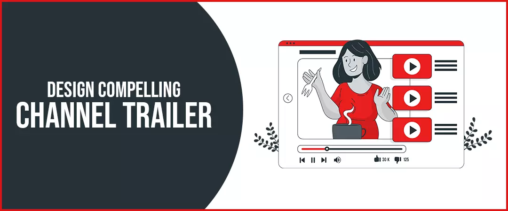
There are certain factors that contribute to your channel to look more professional, one such factor is your channel trailer. A channel trailer should be short and really engaging so that it captures the viewer’s attention. YouTube advises you to keep your channel trailer of about 30-60 second duration. Now it is your job to make these 30-60 seconds highly engaging and compelling. Your channel trailer should address the audience you intend to target, tell your own story about why you wanted to start this channel and an obvious call to action to subscribe your channel.
This will help you grow your youtube channel organically
5. Optimize Channel Page
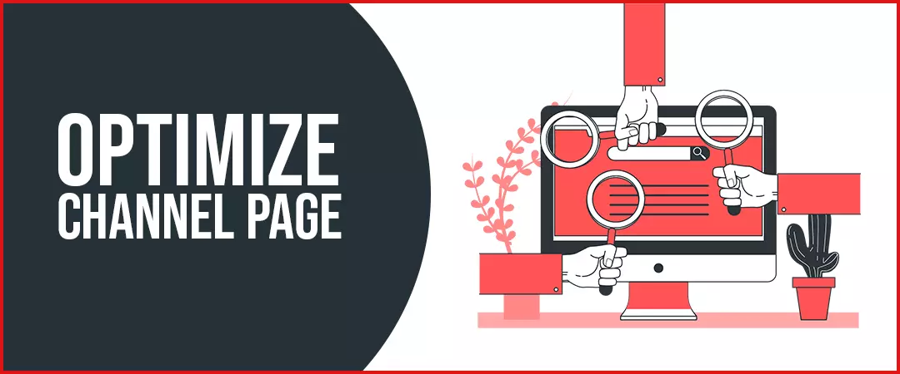
When we talk about your channel page, it includes a lot of things. Let’s go through them one by one. Coming up with a channel tagline really makes you stand apart from the other creators from your niche. A tagline is a phrasal description of your content. It should summarize the purpose of your channel. Next is your channel art! Your channel art says a lot about your seriousness towards your channel. It is always advisable to add a ‘subscribe’ link in the corner along with link to your other social profiles
Along with this create an awesome channel icon. Most creators use a high resolution head-shot or a logo of their channel as channel icon. Your channel icon is seen the most on YouTube. It has to be compelling! Organize your videos on your channel page. Find out which videos converted the most viewers into subscribers from your YouTube Analytics and place those videos out front making it easier for the viewers to spot them.
Your channel page has huge potential to convert your viewers into your subscribers. You just have to follow these few tips and ultimately increase YouTube subscribers.
6. Make best out of YouTube SEO
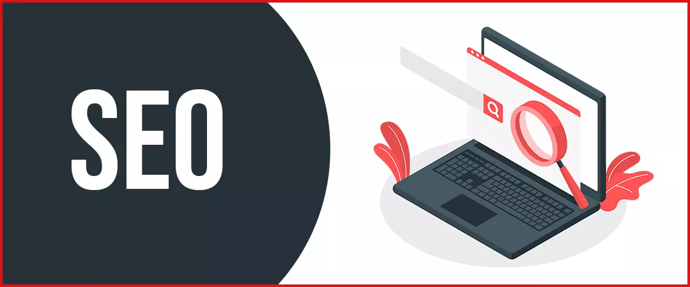
If you get hold of your YouTube SEO, you get hold of the spine! The tedious yet fruitful process of YouTube SEO begins with an in-depth research of keywords for your video. Find relevant keywords using YouTube’s search suggestions feature and by searching for keywords your competitors used in their most popular videos. Our mission is to find keywords with high search volume but low competition. These are the keywords people are searching for a lot and the results are very less. Use simple tools like Google Trends to find such competition.
Optimize your video title, tags and description using these keywords improve ranking of your videos. Avoid the practice of keyword stuffing. Create closed captions and subtitles for your videos. By doing so your video becomes keyword rich and gets indexed in yet another way and helps in improving the ranking of your video in the search engine of YouTube. But using these keywords in more than necessary number only harms your videos. Keyword stuffing never helps the ranking of your videos. All these practices will make your videos easier to be discovered and helps your Youtube channel grow
Bonus Tip (Optimize for Google ranking)
Not many youtubers get this but they can pull a lot of traffic through Google SERPs. How? Well, for many queries, YouTube videos also appear in the results in the video section, and many users prefer watching a video over reading text. If your video performs well enough on YouTube, there is a good chance Google will show your video in the SERPs for target keywords. Thus, optimizing for Google ranking by using keywords accordingly can help you score more organic traffic and consequently, help your channel grow organically.
7. Leverage Google Video Ads
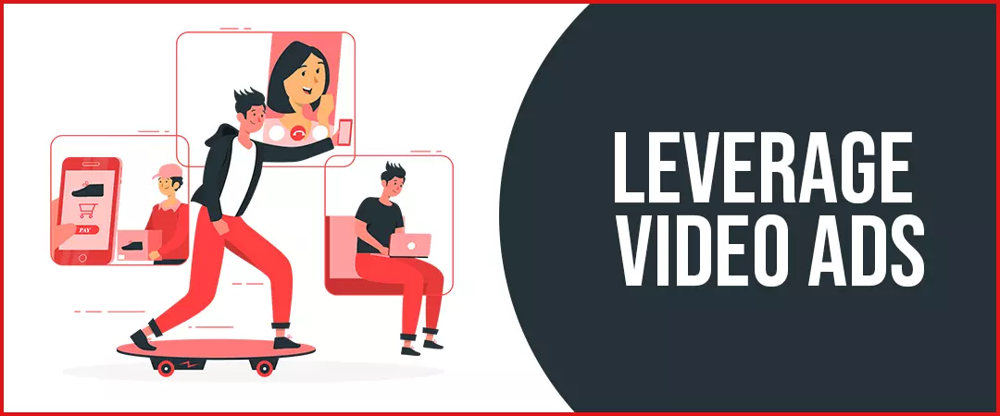
Google Ads is a great platform to reach your target audience on Google and its partners. Hence, you can give it a try with the help of:
Google text Ads
Google display Ads
Google Video Ads
8. Drive traffic to your YouTube channel from blog
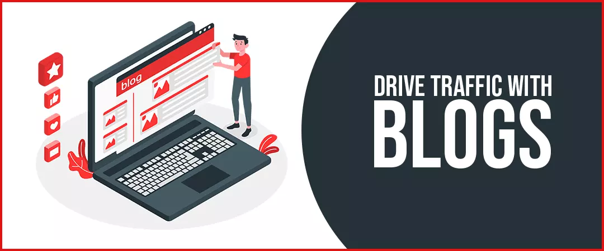
Another way in which you can increase traffic organically on your YouTube channel is by driving traffic from a blog. If you launch a supporting blog to your YouTube channel, you can embed your YouTube videos in the blogs. This way those who prefer to watch video content on a certain topic, can do so. These viewers will eventually become your permanent subscribers. To drive relevant traffic to your Youtube channel in order to increase Youtube subscribers.
9. Empower yourself with the right tools / Equipment for demonstrating professionalism
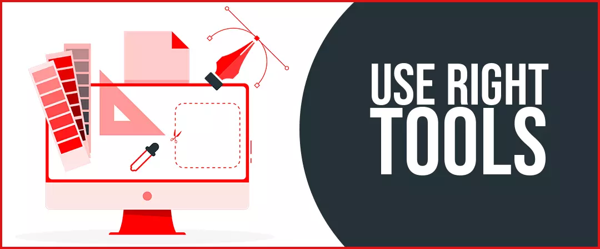
Along with great content and rehearsed script, you also need to use right tools and equipment to produce a video that not only looks professional but also attract viewers. Make sure you have a good quality video camera, if not, a tripod and a smartphone will do just fine. Use lighting kits to set appropriate lighting on your shooting set. Equip yourself with great PC with editing software (Adobe Photoshop, Canva, Adobe After Effects, Apple FCP, Adobe Premier Pro etc.) to make a presentable video. These things will help you make a quality video and help you get more YouTube subscribers.
10. Design custom-made thumbnails
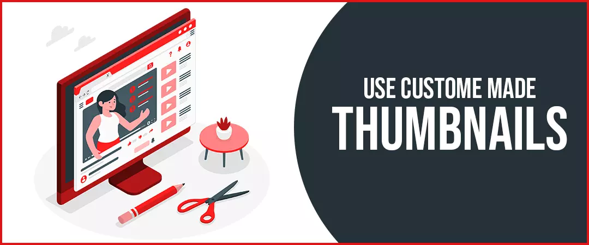
The first thing a viewer sees after reading your video title is the thumbnail. If the thumbnail does not appeal to the viewer, they will not click on your video. This will harm your CTR. Thus, even the video thumbnail should be perfect. It is always advisable to use a custom-made thumbnail instead of letting YouTube generate a random one.
A thumbnail is a pictorial representation of your video content; hence, it has to be perfect! A good thumbnail should consist of images as well as text. Use easy software like Canva / Photshop to design a custom thumbnail. Your thumbnail is your first impression on the viewer and a way to increase your click through rate.
11. Maximize audience retention
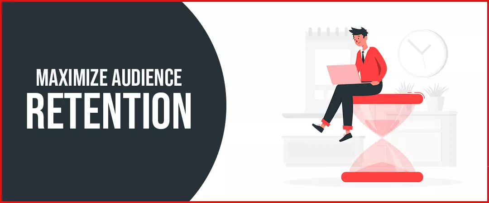
Before we get into how to maximize audience retention, let us understand what does the term audience retention mean. Suppose you published a video of 10 minutes duration, and most of your viewers drop your video after 7 minutes of watching, then your audience retention is 70%. Thus, the portion of your video viewers are watching out of the total video is called audience retention
YouTube suggests that, “Your goal is to keep audience retention as close to 100% as you can and videos with consistently high audience retention and watch time have the potential to show up more frequently in search and suggested locations on YouTube”. You can maximize audience retention by adding a catchy intro and outro to your videos. A catchy intro allows you grab the attention of the viewer for the entire video and a video outro allows you to rebrand your channel once again and ask your viewers to subscribe to your channel.
Use pattern interrupts. A Pattern interrupt is something that causes a little interruption in a person’s chain of thoughts. So, if your video is long and you are afraid that this will hamper your audience retention, a few pattern interrupts here and that should do the trick. Pattern interrupts need not be fancy or complicated. They can be as simple as change in camera angle or a zoom in on a particularly quirky facial expression. Pattern interrupts need not be fancy or complicated. They can be as simple as change in camera angle or a zoom in on a particularly quirky facial expression.
Here’s a few things you could try out:
Simple graphics’ pop up
Jump cuts
Light jokes
A change of clothes
Try out these few tips and let us know which ones work out best for you!
12. Interact with your audience
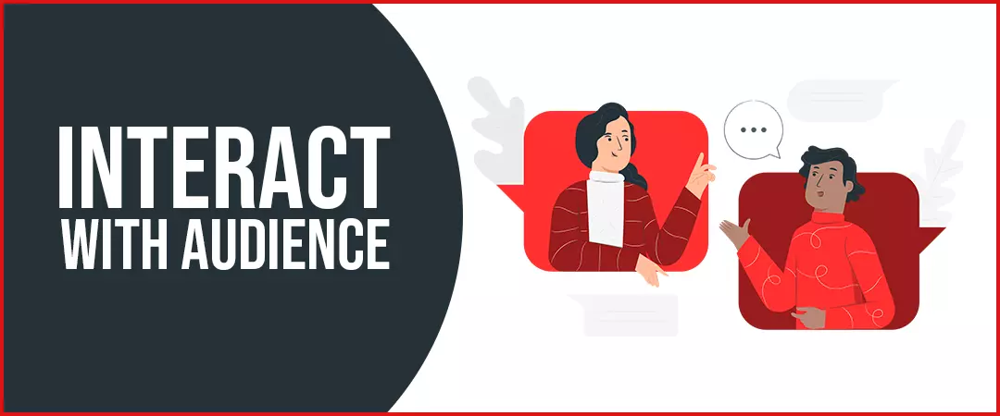
Without a dedicated audience your channel can never grow. So always make it a point to interact with your YouTube community and create a positive energy. At the end of your video, always ask for your audience’s opinion about the video, what did they feel about the video. This will show them that they hold prime importance for you.
Heart your favorite comments! This a feature from YouTube that allows you to heart your favorite comments and whenever you heart a comment, the user gets a notification which makes them more likely to come back to your channel. This will also increase your engagement ratio. This increases your viewer to subscriber conversion ratio and helps you to gain legit Youtube subscribers. According to YouTube, “viewers who have received a heart on their comments are three times more likely to click on the notification, potentially leading more viewers back to the channel”. This makes more likely to subscribe to your channel as well.
13. Use subscribe button as your branded watermark
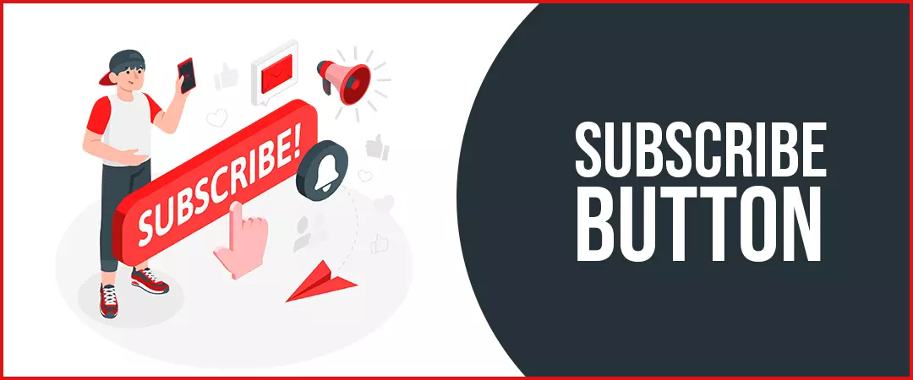
Branded watermark is a logo YouTube allows you to put on the bottom right corner of your video. YouTube provides you with an option of using your branded watermark as a subscribe button. You can easily change your current watermark to subscribe button by going to YouTube branding page. By doing so viewers can easily subscribe to your channel while watching your video without pausing the video or leaving the page. This is another easy and sure way of growing your youtube channel organically!
14. Write an enticing channel description in the “About” section
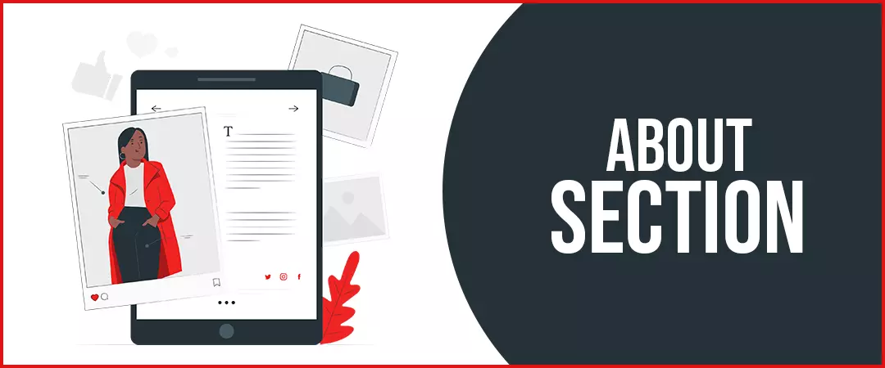
Writing a compelling channel description is important because it has the power to either to push a viewer into subscribing your channel or push a viewer further away from subscribing your channel. A weak channel description acts like a foul smell driving subscribers away. A channel description should be clearly telling a viewer what the channel is about, what audience you wish to target and a clear call to action for subscribing your channel. Using a few relevant keywords also helps in the ranking of your channel. Reevaluate your channel description today and see how it helps your channel grow.
15. Create playlists
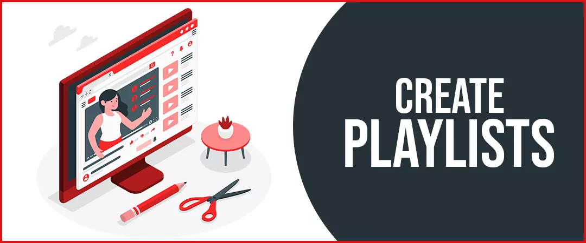
If you have certain videos that go along together well and you think a viewer might like to watch them together, put them into a playlist. Make sure these playlists consist of 4-5 videos at maximum. Putting the video that generated maximum conversion ratio from viewer to subscriber first in your playlists compels the viewers to spend more watch hours on your channel. This multiplies your views and makes viewers more likely to subscribe to your channel, increasing traffic organically.
16. Collaborate with fellow YouTubers
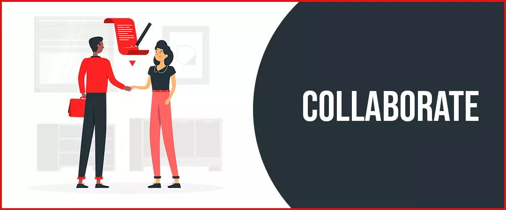
When you collaborate with a fellow YouTuber of similar niche, you get the opportunity to tap into their dedicated audience and attract them towards your channel (Adding their audience to your channel as well). If they find your content worth watching, they won’t mind in becoming your subscriber.
17. Consider giveaways and contests
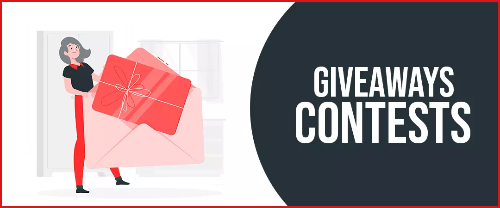
A great way to increase engagement and dedication of your audience is to hold intriguing contests and giveaways. You can even live stream and hold QNA sessions to increase interaction with audience making your audience more loyal towards your channel.
18. Cross platform promotions
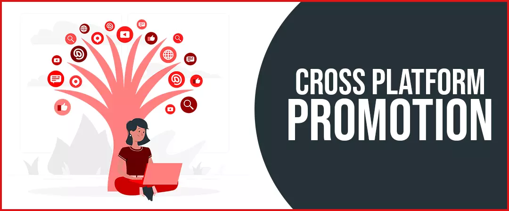
Always leverage the power of cross platform promotion of your YouTube channel. Promoting your channel on your other social media platforms like Instagram, Facebook, Twitter, Tik Tok, Snapchat etc. will bring traffic from these platforms towards your YouTube channel and help your channel growth in a positive manner.
While top notch content will always be the king, but the king alone cannot win the war! Make sure you use these soldiers and watch your YouTube channel grow in record time! These tips are work for beginners as well as seasoned Youtubers. Share with us which tip helped you the most.